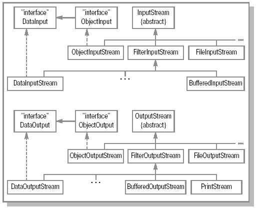

Система ввода/вывода. Потоки данных (stream)
Подавляющее большинство программ обменивается данными с внешним миром. Это, безусловно, делают любые сетевые приложения – они передают и получают информацию от других компьютеров и специальных устройств, подключенных к сети. Оказывается, можно точно таким же образом представлять обмен данными между устройствами внутри одной машины. Так, например, программа может считывать данные с клавиатуры и записывать их в файл, или же наоборот - считывать данные из файла и выводить их на экран. Таким образом, устройства, откуда может производиться считывание информации, могут быть самыми разнообразными – файл, клавиатура, входящее сетевое соединение и т.д. То же касается и устройств вывода – это может быть файл, экран монитора, принтер, исходящее сетевое соединение и т.п. В конечном счете, все данные в компьютерной системе в процессе обработки передаются от устройств ввода к устройствам вывода.
Обычно часть вычислительной платформы, которая отвечает за обмен данными, так и называется – система ввода/вывода. В Java она представлена пакетом java.io (input/output). Реализация системы ввода/вывода осложняется не только широким спектром источников и получателей данных, но еще и различными форматами передачи информации. Ею можно обмениваться в двоичном представлении, символьном или текстовом, с применением некоторой кодировки (только для русского языка их насчитывается более 4 штук), или передавать числа в различных представлениях. Доступ к данным может потребоваться как последовательный (например, считывание HTML-страницы), так и произвольный (сложная работа с несколькими частями одного файла). Зачастую для повышения производительности применяется буферизация.
В Java для описания работы по вводу/выводу используется специальное понятие поток данных (stream). Поток данных связан с некоторым источником, или приемником, данных, способным получать или предоставлять информацию. Соответственно, потоки делятся на входящие – читающие данные и выходящие – передающие (записывающие) данные. Введение концепции stream позволяет отделить основную логику программы, обменивающейся информацией с любыми устройствами одинаковым образом, от низкоуровневых операций с такими устройствами ввода/вывода.
В Java потоки естественным образом представляются объектами. Описывающие их классы как раз и составляют основную часть пакета java.io. Они довольно разнообразны и отвечают за различную функциональность. Все классы разделены на две части – одни осуществляют ввод данных, другие – вывод.
Существующие стандартные классы помогают решить большинство типичных задач. Минимальной "порцией" информации является, как известно, бит, принимающий значение 0 или 1 (это понятие также удобно применять на самом низком уровне, где данные передаются электрическим сигналом; условно говоря, 1 представляется прохождением импульса, 0 – его отсутствием). Традиционно используется более крупная единица измерения – байт, объединяющая 8 бит. Таким образом, значение, представленное одним байтом, находится в диапазоне от 0 до 28-1=255, или, если использовать знак, – от -128 до +127. Примитивный тип byte в Java в точности соответствует последнему – знаковому диапазону.
Базовые, наиболее универсальные, классы позволяют считывать и записывать информацию именно в виде набора байт. Чтобы их было удобно применять в различных задачах, java.io содержит также классы, преобразующие любые данные в набор байт.
Например, если нужно сохранить результаты вычислений – набор значений типа double – в файл, то их можно сначала превратить в набор байт, а затем эти байты записать в файл. Аналогичные действия совершаются и в ситуации, когда требуется сохранить объект (т.е. его состояние) – преобразование в набор байт и последующая их запись в файл. Понятно, что при восстановлении данных в обоих рассмотренных случаях проделываются обратные действия – сначала считывается последовательность байт, а затем она преобразуется в нужный формат.
На рисунке 15.1 представлены иерархии классов ввода/вывода. Как и говорилось, все типы поделены на две группы. Представляющие входные потоки классы наследуются от InputStream, а выходные – от OutputStream.

Рис.
15.1.
Иерархия классов ввода/вывода.
Классы InputStream и OutputStream
InputStream – это базовый класс для потоков ввода, т.е. чтения. Соответственно, он описывает базовые методы для работы с байтовыми потоками данных. Эти методы необходимы всем классам, которые наследуются от InputStream.
Простейшая операция представлена методом read() (без аргументов). Он является абстрактным и, соответственно, должен быть определен в классах-наследниках. Этот метод предназначен для считывания ровно одного байта из потока, однако возвращает при этом значение типа int. В том случае, если считывание произошло успешно, возвращаемое значение лежит в диапазоне от 0 до 255 и представляет собой полученный байт (значение int содержит 4 байта и получается простым дополнением нулями в двоичном представлении). Обратите внимание, что полученный таким образом байт не обладает знаком и не находится в диапазоне от -128 до +127, как примитивный тип byte в Java.
Если достигнут конец потока, то есть в нем больше нет информации для чтения, то возвращаемое значение равно -1.
Если же считать из потока данные не удается из-за каких-то ошибок, или сбоев, будет брошено исключение java.io.IOException. Этот класс наследуется от Exception, т.е. его всегда необходимо обрабатывать явно. Дело в том, что каналы передачи информации, будь то Internet или, например, жесткий диск, могут давать сбои независимо от того, насколько хорошо написана программа. А это означает, что нужно быть готовым к ним, чтобы пользователь не потерял нужные данные.
Метод read() – это абстрактный метод, но именно с соблюдением всех указанных условий он должен быть реализован в классах-наследниках.
На практике обычно приходится считывать не один, а сразу несколько байт – то есть массив байт. Для этого используется метод read(), где в качестве параметров передается массив byte[]. При выполнении этого метода в цикле производится вызов абстрактного метода read() (определенного без параметров) и результатами заполняется переданный массив. Количество байт, считываемое таким образом, равно длине переданного массива. Но при этом может так получиться, что данные в потоке закончатся еще до того, как будет заполнен весь массив. То есть возможна ситуация, когда в потоке данных (байт) содержится меньше, чем длина массива. Поэтому метод возвращает значение int, указывающее, сколько байт было реально считано. Понятно, что это значение может быть от 0 до величины длины переданного массива.
Если же мы изначально хотим заполнить не весь массив, а только его часть, то для этих целей используется метод read(), которому, кроме массива byte[], передаются еще два int значения. Первое – это позиция в массиве, с которой следует начать заполнение, второе – количество байт, которое нужно считать. Такой подход, когда для получения данных передается массив и два int числа – offset (смещение) и length (длина), является довольно распространенным и часто встречается не только в пакете java.io.
При вызове методов read() возможно возникновение такой ситуации, когда запрашиваемые данные еще не готовы к считыванию. Например, если мы считываем данные, поступающие из сети, и они еще просто не пришли. В таком случае нельзя сказать, что данных больше нет, но и считать тоже нечего - выполнение останавливается на вызове метода read() и получается "зависание".
Чтобы узнать, сколько байт в потоке готово к считыванию, применяется метод available(). Этот метод возвращает значение типа int, которое показывает, сколько байт в потоке готово к считыванию. При этом не стоит путать количество байт, готовых к считыванию, с тем количеством байт, которые вообще можно будет считать из этого потока. Метод available() возвращает число – количество байт, именно на данный момент готовых к считыванию.
Когда работа с входным потоком данных окончена, его следует закрыть. Для этого вызывается метод close(). Этим вызовом будут освобождены все системные ресурсы, связанные с потоком.
Точно так же, как InputStream – это базовый класс для потоков ввода, класс OutputStream – это базовый класс для потоков вывода.
В классе OutputStream аналогичным образом определяются три метода write() – один принимающий в качестве параметра int, второй – byte[] и третий – byte[], плюс два int-числа. Все эти методы ничего не возвращают (void).
Метод write(int) является абстрактным и должен быть реализован в классах-наследниках. Этот метод принимает в качестве параметра int, но реально записывает в поток только byte – младшие 8 бит в двоичном представлении. Остальные 24 бита будут проигнорированы. В случае возникновения ошибки этот метод бросает java.io.IOException, как, впрочем, и большинство методов, связанных с вводом-выводом.
Для записи в поток сразу некоторого количества байт методу write() передается массив байт. Или, если мы хотим записать только часть массива, то передаем массив byte[] и два int-числа – отступ и количество байт для записи. Понятно, что если указать неверные параметры – например, отрицательный отступ, отрицательное количество байт для записи, либо если сумма отступ плюс длина будет больше длины массива, – во всех этих случаях кидается исключение IndexOutOfBoundsException.
Реализация потока может быть такой, что данные записываются не сразу, а хранятся некоторое время в памяти. Например, мы хотим записать в файл какие-то данные, которые получаем порциями по 10 байт, и так 200 раз подряд. В таком случае вместо 200 обращений к файлу удобней будет скопить все эти данные в памяти, а потом одним заходом записать все 2000 байт. То есть класс выходного потока может использовать некоторый внутренний механизм для буферизации (временного хранения перед отправкой) данных. Чтобы убедиться, что данные записаны в поток, а не хранятся в буфере, вызывается метод flush(), определенный в OutputStream. В этом классе его реализация пустая, но если какой-либо из наследников использует буферизацию данных, то этот метод должен быть в нем переопределен.
Когда работа с потоком закончена, его следует закрыть. Для этого вызывается метод close(). Этот метод сначала освобождает буфер (вызовом метода flush), после чего поток закрывается и освобождаются все связанные с ним системные ресурсы. Закрытый поток не может выполнять операции вывода и не может быть открыт заново. В классе OutputStream реализация метода close() не производит никаких действий.
Итак, классы InputStream и OutputStream определяют необходимые методы для работы с байтовыми потоками данных. Эти классы являются абстрактными. Их задача – определить общий интерфейс для классов, которые получают данные из различных источников. Такими источниками могут быть, например, массив байт, файл, строка и т.д. Все они, или, по крайней мере, наиболее распространенные, будут рассмотрены далее.
Классы-реализации потоков данных
Классы ByteArrayInputStream и ByteArrayOutputStream
Самый естественный и простой источник, откуда можно считывать байты, – это, конечно, массив байт. Класс ByteArrayInputStream представляет поток, считывающий данные из массива байт. Этот класс имеет конструктор, которому в качестве параметра передается массив byte[]. Соответственно, при вызове методов read() возвращаемые данные будут браться именно из этого массива. Например:
byte[] bytes = {1,-1,0};
ByteArrayInputStream in =
new ByteArrayInputStream(bytes);
int readedInt = in.read(); // readedInt=1
System.out.println("first element read is: "
+ readedInt);
readedInt = in.read();
// readedInt=255. Однако
// (byte)readedInt даст значение -1
System.out.println("second element read is: "
+ readedInt);
readedInt = in.read(); // readedInt=0
System.out.println("third element read is: "
+ readedInt);
Если запустить такую программу, на экране отобразится следующее:
first element read is: 1
second element read is: 255
third element read is: 0
При вызове метода read() данные считывались из массива bytes, переданного в конструктор ByteArrayInputStream. Обратите внимание, в данном примере второе считанное значение равно 255, а не -1, как можно было бы ожидать. Чтобы понять, почему это произошло, нужно вспомнить, что метод read считывает byte, но возвращает значение int, полученное добавлением необходимого числа нулей (в двоичном представлении). Байт, равный -1, в двоичном представлении имеет вид 11111111 и, соответственно, число типа int, получаемое приставкой 24-х нулей, равно 255 (в десятичной системе). Однако если явно привести его к byte, получим исходное значение.
Аналогично, для записи байт в массив применяется класс ByteArrayOutputStream. Этот класс использует внутри себя объект byte[], куда записывает данные, передаваемые при вызове методов write(). Чтобы получить записанные в массив данные, вызывается метод toByteArray(). Пример:
ByteArrayOutputStream out =
new ByteArrayOutputStream();
out.write(10);
out.write(11);
byte[] bytes = out.toByteArray();
В этом примере в результате массив bytes будет состоять из двух элементов: 10 и 11.
Использовать классы ByteArrayInputStream и ByteArrayOutputStream может быть очень удобно, когда нужно проверить, что именно записывается в выходной поток. Например, при отладке и тестировании сложных процессов записи и чтения из потоков. Эти классы хороши тем, что позволяют сразу просмотреть результат и не нужно создавать ни файл, ни сетевое соединение, ни что-либо еще.
Классы FileInputStream и FileOutputStream
Класс FileInputStream используется для чтения данных из файла. Конструктор такого класса в качестве параметра принимает название файла, из которого будет производиться считывание. При указании строки имени файла нужно учитывать, что она будет напрямую передана операционной системе, поэтому формат имени файла и пути к нему может различаться на разных платформах. Если при вызове этого конструктора передать строку, указывающую на несуществующий файл или каталог, то будет брошено java.io.FileNotFoundException. Если же объект успешно создан, то при вызове его методов read() возвращаемые значения будут считываться из указанного файла.
Для записи байт в файл используется класс FileOutputStream. При создании объектов этого класса, то есть при вызовах его конструкторов, кроме имени файла, также можно указать, будут ли данные дописываться в конец файла, либо файл будет перезаписан. Если указанный файл не существует, то сразу после создания FileOutputStream он будет создан. При вызовах методов write() передаваемые значения будут записываться в этот файл. По окончании работы необходимо вызвать метод close(), чтобы сообщить системе, что работа по записи файла закончена. Пример:
Результатом работы программы будет:
При работе с FileInputStream метод available() практически наверняка вернет длину файла, то есть число байт, сколько вообще из него можно считать. Но не стоит закладываться на это при написании программ, которые должны устойчиво работать на различных платформах,– метод available() возвращает число байт, которое может быть на данный момент считано без блокирования. Тот факт, что, скорее всего, это число и будет длиной файла, является всего лишь частным случаем работы на некоторых платформах.
В приведенном примере для наглядности закрытие потоков производилось сразу же после окончания их использования в основном блоке. Однако лучше закрывать потоки в finally блоке.
...
} finally {
try{inFile.close();}catch(IOException e){};
}
Такой подход гарантирует, что поток будет закрыт и будут освобождены все связанные с ним системные ресурсы.
PipedInputStream и PipedOutputStream
Классы PipedInputStream и PipedOutputStream характеризуются тем, что их объекты всегда используются в паре – к одному объекту PipedInputStream привязывается (подключается) один объект PipedOutputStream. Они могут быть полезны, если в программе необходимо организовать обмен данными между модулями (например, между потоками выполнения).
Эти классы применяются следующим образом: создается по объекту PipedInputStream и PipedOutputStream, после чего они могут быть соединены между собой. Один объект PipedOutputStream может быть соединен с ровно одним объектом PipedInputStream, и наоборот. Затем в объект PipedOutputStream записываются данные, после чего они могут быть считаны именно в подключенном объекте PipedInputStream. Такое соединение можно обеспечить либо вызовом метода connect() с передачей соответствующего объекта PipedI/OStream (будем так кратно обозначать пару классов, в данном случае PipedInputStream и PipedOutputStream), либо передать этот объект еще при вызове конструктора.
Использование связки PipedInputStream и PipedOutputStream показано в следующем примере:
Данный пример носит чисто демонстративный характер (в результате его работы массив toRead будет заполнен случайными числами). Более явно выгода от использования PipedI/OStream в основном проявляется при разработке многопоточного приложения. Если в программе запускается несколько потоков исполнения, организовать передачу данных между ними удобно с помощью этих классов. Для этого нужно создать связанные объекты PipedI/OStream, после чего передать ссылки на них в соответствующие потоки. Поток выполнения, в котором производится чтение данных, может содержать подобный код:
Если с объектом inStream одновременно могут работать несколько потоков выполнения, то необходимо использовать блок synchronized (как и сделано в примере), который гарантирует, что в период между вызовами inStream.available() и inStream.read(…) ни в каком другом потоке выполнения не будет производиться считывание из inStream. Поэтому вызов inStream.read(readedBytes) не приведет к блокировке и все данные, готовые к считыванию, будут считаны.
StringBufferInputStream
Иногда бывает удобно работать с текстовой строкой String как с потоком байт. Для этого можно воспользоваться классом StringBufferInputStream. При создании объекта этого класса необходимо передать конструктору объект String. Данные, возвращаемые методом read(), будут считываться именно из этой строки. При этом символы будут преобразовываться в байты с потерей точности – старший байт отбрасывается (напомним, что символ char состоит из двух байт).
SequenceInputStream
Класс SequenceInputStream объединяет поток данных из других двух и более входных потоков. Данные будут вычитываться последовательно – сначала все данные из первого потока в списке, затем из второго, и так далее. Конец потока
SequenceInputStream будет достигнут только тогда, когда будет достигнут конец потока, последнего в списке.
В этом классе имеется два конструктора – принимающий два потока и принимающий Enumeration (в котором, конечно, должны быть только экземпляры InputStream и его наследников). Когда вызывается метод read(), SequenceInputStream пытается считать байт из текущего входного потока. Если в нем больше данных нет (считанное из него значение равно -1), у него вызывается метод close() и следующий входной поток становится текущим. Так продолжается до тех пор, пока не будут получены все данные из последнего потока. Если при считывании обнаруживается, что больше входных потоков нет, SequenceInputStream возвращает -1. Вызов метода close() у SequenceInputStream закрывает все содержащиеся в нем входные
потоки.
Пример:
В результате выполнения этого примера в файл file3.txt будет записано содержимое файлов file1.txt и file2.txt – сначала полностью file1.txt, потом file2.txt. Закрытие потоков производится в блоке finally. Поскольку при вызове метода close() может возникнуть IOException, необходим try-catch блок. Причем, каждый вызов метода close() взят в отдельный try-catch блок - для того, чтобы возникшее исключение при закрытии одного потока не помешало закрытию другого. При этом нет необходимости закрывать потоки
inFile1 и inFile2 – они будут автоматически закрыты при использовании в sequnceStream - либо когда в них закончатся данные, либо при вызове у sequenceStream метода close().
Объект SequenceInputStream можно было создать и другим способом: сначала получить объект Enumeration, содержащий все потоки, и передать его в конструктор SequenceInputStream:
Если заменить в предыдущем примере инициализацию sequenceStream на приведенную здесь, то в файл file3.txt, кроме содержимого файлов file1.txt и file2.txt, будут записаны еще три строки – одна в начале файла, одна между содержимым файлов file1.txt и file2.txt и еще одна в конце file3.txt.
|